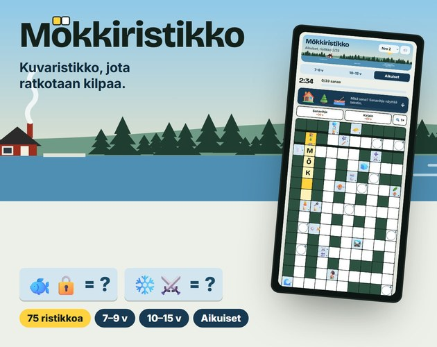

Ristikko netissä
Jokainen vihje on emoji-arvoitus. 🐟🔒 on katiska, ❄️⚔️ talvisota ja 🔙 selkä. Kirjoita sana, ja oikea vastaus muuttuu vihreäksi ja lukittuu. Kello käy, joten nopein ratkaisija pääsee tulostaululle.

Lapset 7–9 v, nuoret 10–15 v tai aikuiset. Kullekin on 25 omaa ristikkoa.
Vihjeet ovat kuva-arvoituksia, eli emojit yhdessä muodostavat sanan.
Oikea sana muuttuu vihreäksi ja lukittuu. Ristikossa sanat risteävät, joten yksi oikea vastaus auttaa seuraavaan.
Sanavihje lisää aikaasi 30 sekuntia ja yksi kirjain 60 sekuntia.
7–9-vuotiaiden ristikoissa on lyhyitä, tuttuja sanoja ja selkeitä kuvavihjeitä. Hyvä tapa harjoitella lukemista ja päättelyä.
10–15-vuotiaille vähän pidempiä sanoja ja ovelampia arvoituksia.
Aikuisten ristikoissa emojit vaativat jo sanaleikkiä ja suomalaista yleistietoa.
Kun ratkaisu on valmis, lähetä aikasi WhatsAppiin. Kaveri saa saman ristikon ja yrittää lyödä aikasi. Jokaisella ristikolla on oma tulostaulu, joten näet myös, miten pärjäät muihin pelaajiin verrattuna.
Mökkiristikko on tehty mökkipeliksi: sitä voi ratkoa sateisena iltana koko perheen kesken, saunan lauteilla tai junamatkalla. Peli toimii puhelimella ja tietokoneella, ja sen voi lisätä kotinäytölle kuin sovelluksen.
On. Ristikot ovat ilmaisia, eikä pelissä ole mainoksia tai rekisteröitymistä.
Sopii. Lapsille 7–9-vuotiaille on 25 omaa helppoa ristikkoa, nuorille 10–15-vuotiaille 25 ja aikuisille 25.
Vihje on kuva-arvoitus. Esimerkiksi kala ja lukko tarkoittavat katiskaa ja lumihiutale ja miekat talvisotaa.
Mökkiristikko on tehty ratkottavaksi puhelimella tai tietokoneella, jolloin oikeat sanat tarkistetaan heti ja kello mittaa aikasi.
Ei rekisteröitymistä, ristikko aukeaa heti.